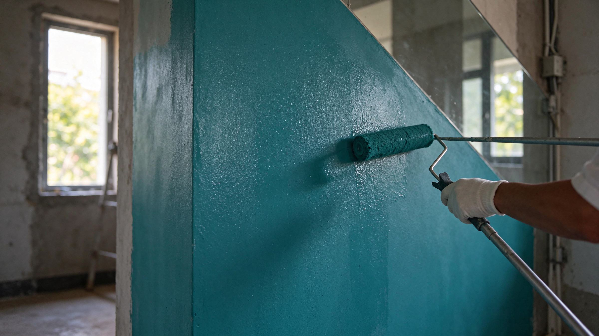

Malerarbeiten
Wir bieten Ihnen professionellen Service bei sämtlichen Malerarbeiten. Wir übernehmen den Schutz von Objekten, führen Arbeiten zum Erhalt von Oberflächen durch und sind selbstverständlich auch für den dekorativen Teil, die Flächenverschönerung, zuständig.
Bei Bedarf sind wir Ihr zuverlässiger Partner für komplette Renovierungen und nehmen Ihnen alle anfallenden Arbeiten ab. Zu unseren besonderen Fähigkeiten gehört die professionelle Anwendung moderner Wisch- und Spachteltechniken.
Anfragen